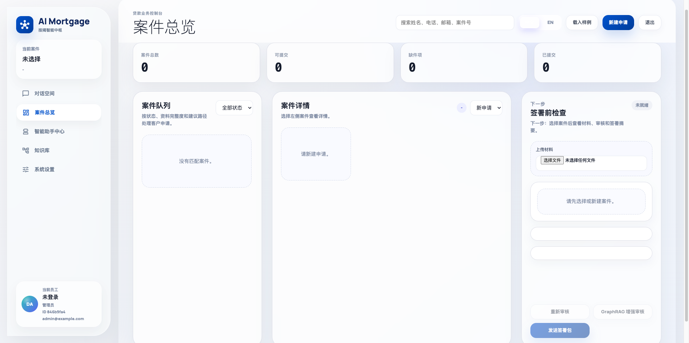
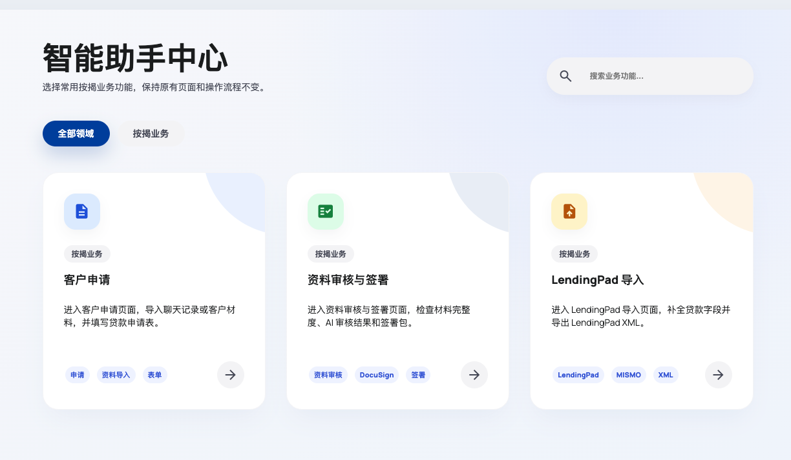
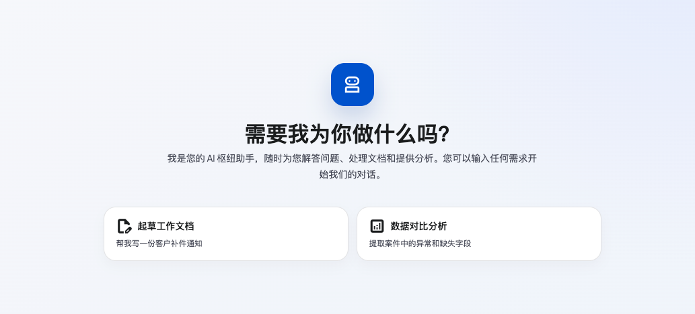
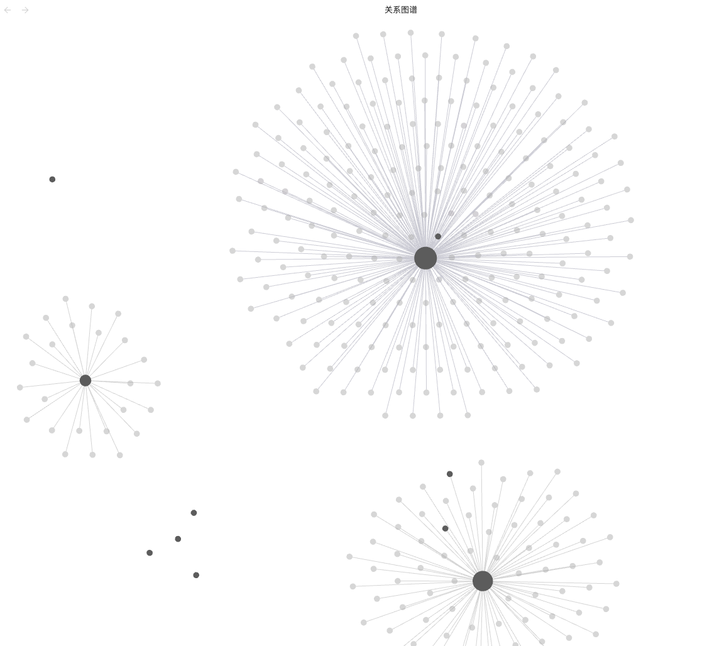

当前成果
当前版本已形成可演示、可继续扩展的合规 AI 工作底座。
系统以客户资料处理为起点，先覆盖案件查看、资料审核、AI 辅助判断和隐私安全处理，让贷款团队可以在一个入口内完成基础审核与后续推进。
集中展示案件、资料状态、缺失项、下一步和审核入口，减少员工在多个页面之间反复查找。
把客户申请、资料审核、签署、LendingPad 导入等常用动作整理成业务入口。
围绕 SSN、银行账号、信用报告等敏感字段建立识别、脱敏、权限和审计思路。
用公司 SOP、政策和历史经验增强 AI 回答，让员工看到依据，而不是只看到一句结论。

第一阶段
先把隐私边界搭牢，AI 才能处理客户资料。
贷款资料里包含 SSN、银行账号、信用报告、收入、税务、地址等高敏信息。GLBA、CCPA 和公司 DSP 都要求这些数据在使用前明确用途、权限、边界和审计记录。因此第一阶段的重点，是让 AI 在安全边界内工作。
判断资料类型、客户归属、业务用途和是否属于高敏资料。
SSN、账号、DOB、地址、信用报告等字段按规则脱敏或阻断。
员工只能在案件范围和岗位权限内查看、调用和处理资料。
LLM 使用最小必要上下文，避免完整客户资料直接进入模型。
对监管压力更高的资料，可采用本地部署或私有化模型策略。
记录资料来源、AI 调用、引用依据、员工操作和复核状态。
解决什么问题
客户资料进入后，系统把复杂判断转化为清晰任务。
员工不需要先理解模型、向量库或图谱技术，只需要看到资料状态、风险提示和下一步动作。
资料是什么
识别 Paystub、W-2、Bank Statement、Tax Return、ID、Credit Authorization 等资料类型。
资料缺什么
检查缺失项、过期项、不一致字段和需要补充的文件。
风险在哪里
提示 SSN、银行账号、信用报告等敏感信息，以及是否需要人工复核。
下一步做什么
建议补资料、发 DocuSign、同步 LendingPad、转主管复核或继续推进。
员工流程
从客户资料进入，到签署和贷款系统推进，流程被整理成一条线。
邮件、上传入口、DocuSign 回收文件或 LendingPad 附件进入资料包。
判断 Paystub、W-2、Bank Statement、ID、Tax Return 等资料类别。
识别 SSN、账号、信用报告等字段，按规则脱敏、授权和留痕。
结合 SOP、政策和历史经验，提示缺失项、不一致字段和风险。
员工确认补资料、主管复核、发起签署或继续推进贷款流程。
签署任务进入 DocuSign，贷款字段和进度同步到 LendingPad。
补件原因、员工纠错、主管意见和处理结果沉淀为公司经验。
产品界面
产品界面面向员工日常操作，重点呈现资料状态和下一步。


三阶段规划
产品路线分为三步：合规使用、知识沉淀、全流程协同。
三阶段不是独立功能堆叠，而是从“AI 能否安全使用客户资料”逐步推进到“AI 能否理解公司业务并推动贷款流程”。
合规 AI 使用底座
解决 AI 能否处理客户资料，以及怎样处理才不越过合规边界。
- 客户资料分类和敏感字段识别
- SSN、银行账号、信用报告脱敏
- 权限控制、AI 使用边界和审计日志
- 基础资料审核与 SOP 引用建议
企业知识库建设
把公司自己的 SOP、政策、模板、FAQ 和历史经验接入知识库。
- 企业知识库和 Obsidian/Markdown/PDF 接入
- 政策、流程、资料、风险关系图谱
- 员工问答、纠错和复核意见回流
- DocuSign、LendingPad 相关流程知识沉淀
贷款全链路协同
从知识问答升级为能推动贷款流程的业务协同系统。
- 客户资料包全流程管理
- DocuSign 签署任务与状态回收
- LendingPad 字段、条件和进度同步
- 多跳检索、生产监控和稳定审计
平台打通
DocuSign 和 LendingPad 作为业务节点接入同一条资料流程。
不同平台的数据资料格式不一致，员工往往需要重复录入和反复确认。系统通过 API 调用和字段映射，把签署状态、贷款字段、缺失资料和知识库判断连接起来。
用于发起签署包、匹配签署模板、追踪签署状态，并把签署文件回收到客户资料包。
用于同步客户字段、贷款条件、进度状态和缺失资料提醒，减少员工重复录入。
不同平台的数据格式不一样，系统通过 API 调用和统一资料模型，把它们翻译成同一套业务语言。
知识沉淀
每一次处理、纠错和复核，都会沉淀为公司自己的业务经验。
当员工处理客户资料、发起签署、同步 LendingPad、补充 SOP 或提交复核意见时，这些记录都会成为后续 AI 判断的依据。 系统不只是一次性的问答工具，而是逐步形成公司的业务记忆。
12资料来源
42实体关系
328知识节点

AI Mortgage LoanFlow AI